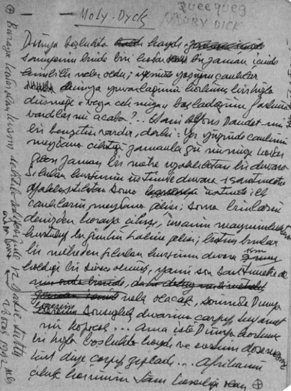

Dünya boşlukta kaydı, saniyenin binde biri kadar bir zaman içinde kim bilir neler oldu, üzerinde yaşıyan canlılar Dünya yuvarlağının korkunç bir hızla düşmeye veya çıkmaya başladığının farkına vardılar mı acaba? Alfons Daudet’nin bir benzetisi vardır, der ki: – ilk canlıların meydana gelişi, sonra bunların denizlerden karaya çıkışları, ya da karalardan denizlere inişleri, insanın maymunluktan kurtulup bugünkü haline gelişi, bütün bunlar bir metreden fırlatılan kurşunun duvara bir santimetre kaldığı bir sürede olmuş, yani son santimetrede; daha sonra neler olacak, Dünya sonsuzluk duvarına çarpıp kıyamet mi kopacak? Ama işte Dünya yuvarlağı korkunç bir hızla kaydı ve evrenin döşemesine küt diye çarpıp zıpladı... Afrika’nın çıkık karnının tam karşılığı olan kısmında; Sargaslar Denizi’nin güney doğusunda Amerika’nın girinti tarafında, Karaipler Denizi’nin altını üstüne getiren üç bin kilometre uzunluk, iki bin kilometre genişlik, binlerce metre derinlikte bir çöküntü oldu! Yüz binlerce yıldan beri tatlı sulardan Sargaslar Denizi’nin kökü kaç bin metre derinlikte olduğu bilinmiyen saz ve yosun ormanlarına yumurtlamıya gelen milyonlarca yılan balığı, yunuslar, balinalar, denizlerin üstünde adalara benziyen gövdelerini yayıp dev bir deniz yıldızı gibi suların üstünde keyif çatmıya gelen korkunç büyüklükte ahtapotlar ne olduklarını anlıyamadan yüzlerce kilometrelik çukura boşalmıya başlıyan okyanusun döne döne coşkunlaşan korkunç anaforuna kapıldılar, kim bilir kaç bin Titanik faciası oldu bu sırada! Dünya Türk-Alman Kültür Merkezi’nde açtığım serginin “vernissage” akşamı yemeğinde deli dolu bir ressamın bana sevimli bir armağanıydı, korkudan dudağımı çatlatan, arkasını okumayı bende takat bırakmayan şu sözleri yazmış sergi salonundaki deftere “Cihat Bey, Cihat Bey, beni mahvettiniz” arkasını okuyamamıştım, dizlerimin bağı çözülmüştü. Eyvah demiştim. Yine mi geldi buldu beni buraya da mı geldi; burada da mı buldu beni diye düşünmüştüm, deli bu kadın, deli muhakkak, zaten ondan her şey beklenir de, yazının arkasını okuyabilince ferahladım ancak; meğerse bunu yazan bana “küre”yi armağan eden ressammış, sergiyi çok beğenmiş; onu mahveden resimlerin güzelliğiymiş!
Küreyi elime aldım, Karaipler Denizi kısmı çökmüştü gerçekten, düzeltilmesine de olanak yoktu artık, çar naçar öyle kullanmaya başladım... Moby-Dick’i işte elimde bu kıyametten kurtulmuş Dünya ile okurum! İçinde yaşadığım odayı bir Dünya kadar büyütmüştü sevgili Herman Melville’in kitabı... Bazı kitaplar vardır insanlığın destanı gibidirler, işte Moby-Dick de onlardan biri bence, ne de güzel çeviri, kitabı okudukça hayranlığım artıyor. Sabahattin Eyüboğlu’yla Mina Urgan’ın ellerini öpesim geliyor, hiçbir aşırılığa kaçmadan ne duru ne güzel Türkçe, üstelik dizi de hatasız, dört yüz sayfada ancak iki üç tertip yanlışı var, bir yerinde de birinde güney denecek yerde iki kere kuzey balinası denilmiş, bir de “başı sarıklı İstanbul müftüsü” tümcesi yadırgattı beni, Herman Melville her halde böyle yazmazdı! Ama kitap yazmış, içerden kilitli odasında başında tanrı’sı, yıllık orucunu tutan yamyamı adeta gözleriyle görüyor insan... Elleri cebinde, dümenciyle kürekçilerin arasında, fırtınanın ortasında inip kalkan kayığında karşı gemiye “gamlaşmaya” gidenin, kaptanın, fırtınanın ulumaları arasında yıkılmadan, açılmış iki bacaklarının üstünde durmıya çalışması... Tökezlese, öndeki tayfalardan birinin saçlarına tutunmıya kalkışsa kendisine gözlerini dikmiş bütün bir su âlemine rezil olmak var! Onun için tahta bacaklı Ahab’ın çok fırtınalı bir günde yanlarından geçen bir balina gemisine, hem de Kentucky’li bir balina gemisine “gamlaşmıya” gitmesini anlıyoruz... İşte bu Kentucky’yi ararken düştü zaten Dünya elimden, aramış aramış bulamamıştım küçücük Küre’nin üstünde, küçücük yazıları okumak için büyülteç lazım, o da daire’de zaten... Kalkıp Larousse’a bakayım dedim, işte o zaman düşürdüm elimden Dünya’yı, Amerika’nın Atlantik kıyılarında kıyametler koptu, açılan korkunç çukurun kaldırdığı dev dalgalar Empire State Building’in kim bilir kaç misli yükseklere fırladı... Meğerse benim Atlantik kıyısında aradığım Kentucky Pasifik Okyanusu’nda upuzun bir yarımadanın güneyinde kumsal yassı bir adanın üstünde kurulmuş bir balina limanıydı... Balina avcıları, balinacılık para babaları Onassisler gibi sonradan görme zenginlerin, Jackie’nin her sabah aldığı çiçek buketinin içinde bütün bir balina kayığının, hatta gemisinin birkaç yıllık nafakasını satın alacak kıyamette bir mücevher bulması için suya saldığı on binlerce tonluk, buranlarında zıpkın toplarıyla denizlere açılan kalleşliğe dönüşmeden önce, korkusuz, hem de ödleri patlıyan kahraman denizcilerin üç dört yıl süren balina avına çıktıkları liman... Kitabın yarısındayım daha; bitecek diye ödüm kopuyor, ama elimden de bırakamıyorum.. Üçüncü tutkum oldu bu benim, belki de onuncusu, ama içlerinde hatırlıyabildiklerimden üçüncüsü... Birincisi yine bir Amerikalının kitabıydı; Galatasaray’da Fransız edebiyatı hocamız Marcel Odetta[44] birgün derste 1183 Latif’in[45] yine parmağını kaldırıp münasebetsiz bir şey sormasından yüreğimiz hoplıya hoplıya bir şeyler anlatmıştı... Baudelaire’i anlatıyordu sevgili hocamız[46], tatlı tatlı anlatırken gözleri burnunun ucuna bakarmış gibi hafifçe şaşılaşırdı hep, teneffüs zili[47] çalacak diye ödümüz kopuyordu, bir de Latif soru soracak diye! Bir keresinde Şatobriyan’la kız kardeşinin arasındaki ilişkiyi anlatırken gramerle ilgili bir soru sormuştu, hoca yanıtlarken zil çaldı, hepimiz oyuncağı elinden alınmış çocuklar gibi dona kaldık, hocayı ayakta selamlayıp yolcu ettikten sora, arkada sınıfın köşesindeki çinko musluktan doldurulmuş bir su külahı patlamıştı Latif’in ensesinde, sınıfın intikamıydı bu.. Marcel Odetta, Baudelaire’in Fransızcaya çevirdiği bir Amerikalı şairden bahsetmişti bir keresinde de, o kadar sevmişti Baudelaire bu adamı, adeta âşık olmuş, İngilizcesi çok ağır olan bu yazarı çevirebilmek için delice çalışmış, bilgisini ilerletmiş!
Edgar Poe ikinci kaptanın balinanın içinde aradığı altın tas gibi kafamın içinde yıllarca kalmıştı; ben de daha yüzünü hiç görmediğim, hiçbir şeyini okumadığım, yalnız Karga adlı bir şiiriyle, “Histoires Extravagantes” adlı bir hikâye kitabı olduğunu bildiğim bu zilzurna sarhoş büyük yazara âşık olmuştum Baudelaire’in yüzünden; Akademi’nin[48] ilk sınıfında ayak uçlarıma basa basa[49] girdiğim kütüphanede sonradan Ahmet Muhip Dranas olduğunu öğrendiğim Hafız-ı Kütüp’ten[50] Edgar Allan Poe’nun “Histoires Extravagantes”ının olup olmadığını sordum, o büyük bir nezaket içinde bu kitabın adının “Histoires Extravagantes” değil Extraordinaires olduğunu söyledikten sonra bana Pleiades edisyonundan koyu nefti meşin kaplı, sahifeleri çok ince, kenarları yaldızlı bir kitap verdi elime; sömestr tatiliydi, sırtımda yapılacak bir alay işle odama kapanıp kitabı açtım, derslere elimi bile sürmeden tam yirmi gün bırakmadım kitabı elimden, Paradis Artificiels’den[51] başladım, Morgues sokağının katil orangotanı, Morella, Ligea, Veba Kral’la tadına doyulmaz bir yirmi gün geçirdim! İkinci tutkum Evliya Çelebi oldu, bu birinciden de belalı bir tutku oldu bende; üç ciltlik “seçmeleri” kim bilir kaç kere okudum, Melek Ahmet Paşa’nın elleri beyaz eldivenli ahçıları, Kaya Sultan’ın[52] mastarından kollarını dirseklerine kadar sokup kanlı ciğer, bağırsak ve nice eşya çıkaran kanlı ebeleri! Ölü doğmuş erkek düşüğü makramasına[53] sarıp dolaşan dev yapılı, gözleri yaşlı koskoca paşayı, Evliya’nın “Sultan’ım, at mı bindi, kılıç mı kuşandı, hemen senle Kaya Sultan’ın sağ olun; şekli belirmemiş kırmızı bir et parçası için bu ağlama nicedür” diye adeta azarlamasını okur elimden bırakamazdım.. Yıllar sonra Evliya Çelebi’nin on cildini[54] birden ele geçirme fırsatını buldum dünyalar benim oldu sanki!
Düşünüyorum da sevgili Evliya yalancıların en gerçekçisi, palavracıların en sevimlisi, röportajcıların en renklisi. Binlerce tatarın dörtnala Karanlıklar Diyarı’na[55] giderken atından yuvarlanıp herise olmak korkusuyla aklı başından giden sevgili Evliya’ya insanın: – Seni de yabancı dillere çeviren böyle çeviricilerin olsaydı Dünya gözleri önüne serilen bu zenginlik karşısında kim bilir ne kadar şaşırırdı diyesi geliyor, de Gaulle’ün bile Türk yazı sanatı deyince aklına gelen sen değil miydin? 17. yüzyıl Avrupa’sının, özellikle Macar tarihinin en renkli, en kıymetli resimleri sende değil mi? Üçüncü tutkum işte Moby-Dyck ama ne yazık ki Evliya gibi uçsuz bucaksız on cilt değil, dokuz yüz sahifeye yakın tek cilt ama koca okyanusların, dünyanın en görkemli canlısını[56] bütün gizleriyle bağrında barındıran ispermeçet balinalarının her sahifesinde koskoca kalplerinin gümbür attığı sekiz yüz elli sayfalık tek bir cilt...
İnsan anlıyor o zaman sahici adamların sahici olaylara basarak da sahici kitaplar yazabileceğini... Hiçbir ukalalık yok içinde hintyağı içirir gibi, ders verir gibi, insanın kafatasının tepesine bir delik açıp içine huni ile ilim doldurur gibi hiçbir sıkıcılık yok... Ama batı insanının; insanlığı kendine maske yapıp dümenini düzenlerin suratlarına şak şak inen tokatlar var; kazı ayağından yere çivileyip ciğerini yemek için semirten beyazdan, avladığı insanı kıtlık günlerini düşünerek salamura yapan ihtiyatlı Fijili daha mı vahşidir diye soruyor Melville, oysa o ne gaz odalarını gördü, ne bir göz açıp kapamada yüzlerce binlik kentleri ortadan kaldıran atom bombalarını!
Balina avcıları çelik kaleler içinde otuz kırk bin tonluk kentlerle çıkmazlardı balina avına o zamanlar, zıpkınlar gemilerin burnundan elektrikli beyinlerin, kompüterlerin fırlattığı basbayağı toplardan fırlatılmazdı; balinaya da yaşama şansı tanıyordu o çağın balina avı; insanoğlu eline ne geçerse öldürme çılgınlığına yakalanmamış o zamanlar henüz göçleri günlerce Güneşi karartan yaban güvercini sürüleri tüketilmemiş daha, her biri ikişer tonluk yüz binlerce; çocuk bakışlı, kayıtsız bizon sürüleri otluyor yemyeşil çayırlarda! Beyaz insan dibinde Wall Street’in, City’nin kokmuş küfekisi birikmiş dişlerini adamakıllı geçirememiş daha doğa’nın gırtlağına, Livingston’la, Stanley şaşkın şaşkın emekliyorlar belki de ormanlarda! Her bir dişi üç buçuk metre gelen görkemli filler yerleri titrete titrete dolaşıyorlar kaygısız; Eski Dünya, Yeni Dünya “tüketim toplumu” doğurmanın sancısı içinde ve balinalar, denizlerin padişahları, o kadar hızlı yüzüp dalmalarına karşı eklemlerinin kızışmamasını insanoğlunun çözemediği balinalar daha soylarının tükenme sorunuyla karşı karşıya değil! Çıktıkları üç dört yıllık av sonunda anbarlarının kıymetli İspermeçet yağıyla doldurup nafakalarını düzeltebilecek payı alabilmek için koyuyor canlarını ortaya insanlar, aslan payı yine de patron’un cebine iniyor genellikle! Ama bunlar Jackie ile karşılıklı “hayat seviyeleriyle” orantılı para harcıyamadıklarına ağlıyan Onassis gibi para babaları değil; kendileri de balinalara zıpkın sallamış; balina sandallarında dümen palası tutarak önce kaptan, sonunda gemi sahibi olmuş patronlar, gemi babaları; içinde yoğruldukları denizler kadar sert, hoyrat insafsız, on paraya on düğüm atan; ispermeçetin bir gramını bile ziyan etmiyen bir tür işçi patronlar, tüketim kralları onların omuzlarına basa basa harpler tutuşturacak, silah fabrikaları mallarını satabilmek için ulusları birbirine düşürecekler; Hermann Melville bunların hiçbirinden söz etmiyor ama çıkar savaşında iç içe yaşıyan bu insanlar birbirlerinden denizlerle ayrılmış adalar kadar uzak diyor! Ahab geminin döşemesinde açtırdığı deliğe ucunu soktuğu balina kemiğinden bacağıyla sanki kendi felaketini hazırlıyan insan oğlunun kaderi gibi, sırtına eski zaman şövalyelerinin geçirdikleri zırhı geçirircesine Moby-Dyck’in kinini geçirmiş, bütün zaafların, isteklerin, zevklerin üstünde kemik bacağıyla dimdik duruyor!
21 Eylül 1971